- 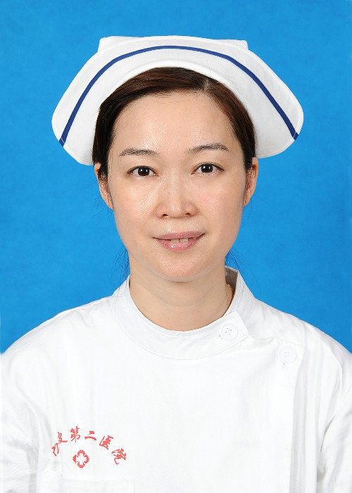
陈 燕
骨四科护士长 副主任护师 护理本科学历
宁波市护理学会骨科专业委员会委员，心理学研究生学历。在内分泌科、外科、骨科护理及 护理管理方面具有丰富经验，曾获＂华美服务之星＂称号。
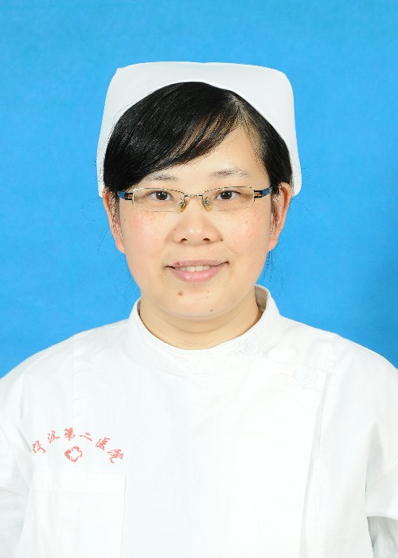郁舒容
主管护师，本科学历，中共党员
有放疗科、消化内科、肾内科、内分泌科的工作经历，曾在院内护理操作比赛中获得二等奖。 有扎实的护理基础理论知识，能熟练进行各项护理操作，应急能力强，擅长与病人沟通，医 护患关系融洽。
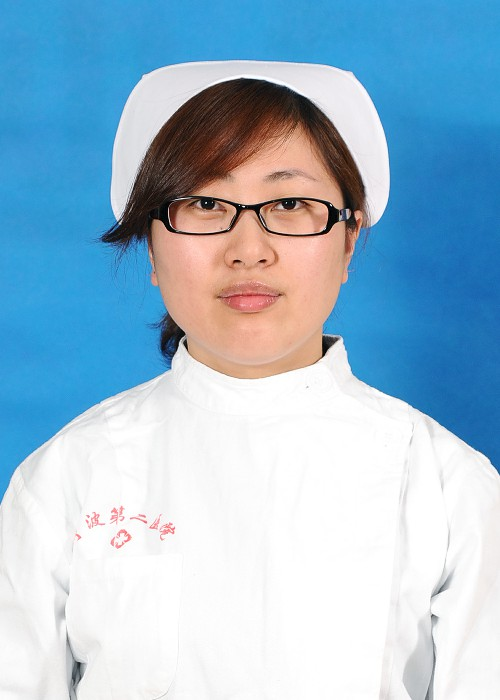李明敏
主管护师，本科学历
有重症监护病房、内分泌科工作经历，有扎实的护理基础理论知识，能熟练进行各项护理操 作，应急能力强，擅长与病人沟通，医护患关系融洽。
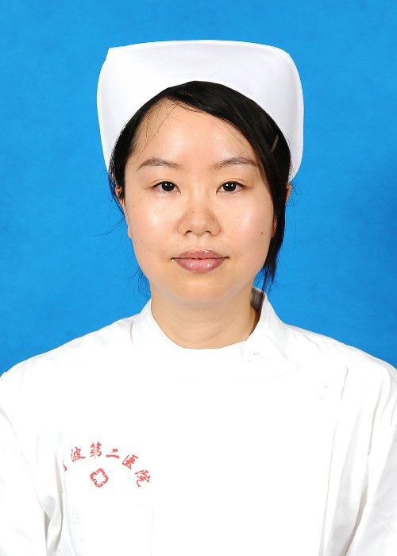钟娜儿
主管护师，本科学历，中共党员
有重症监护病房、呼吸内科、内分泌科工作经历。稳重，勤劳，做事认真负责，有扎实的护 理理论知识，熟悉各项临床操作技能。对工作认真负责，热爱护理事业，在护理工作中体现 自己的人生价值。
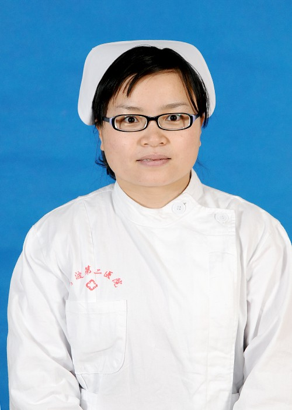陈密密
主管护师，本科学历
有烧伤科、胸外科、神经内科、内分泌科，重症监护室病房工作经历。有爱心、耐心、责任 心，爱岗敬业，有为病人提供良好服务的理念。曾获“十佳护士”、“人民满意护士”。希望 我的微笑，是您伤痛时的温暖阳光，是您重返社会的坚定信念。
曹灵丽
主管护师，本科学历
有新生儿重症监护、内分泌科工作经历，曾在广州市儿童医院肾内科、五官科进修。护理操 作技能熟练，护理经验较丰富，愿意用心为患者书写健康。

王天璐
主管护师，大学本科学历，中共党员
有泌尿外科、放疗科、内分泌科工作经历。熟悉各项临床操作技能，善于与患者的沟通交流， 用“细心、爱心、耐心”对待患者，得到患者一致认可。
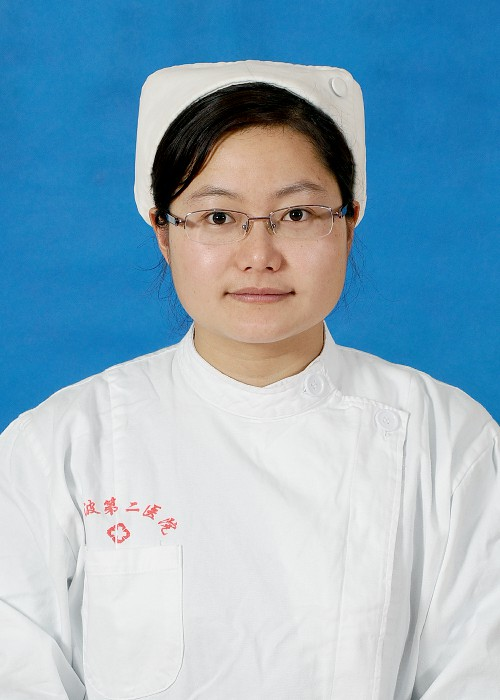林丹娅
主管护师，本科学历
有口腔科、泌尿科、眼科及消化内科、内分泌科工作经历。用我的爱心、精心、细心为每一 位患者维护健康，呵护生命。
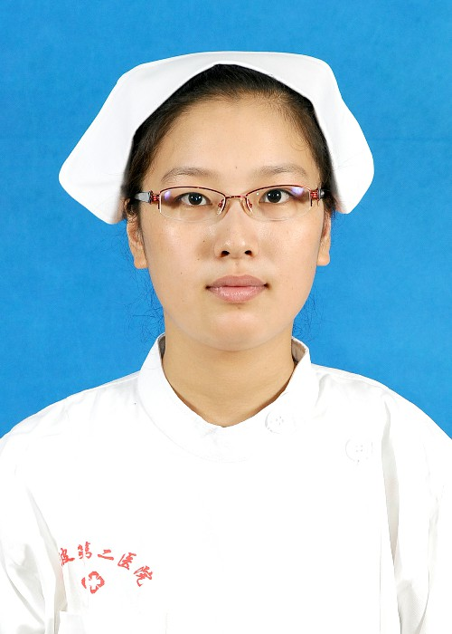倪舒芳
护师，本科学历，中共党员
有神经内科及感染内科工作经历，在宁波市中医院进修中医骨伤科护理。用暖心的笑容对待 每一位患者，用热忱的心对待工作，积极进取，不断提升。
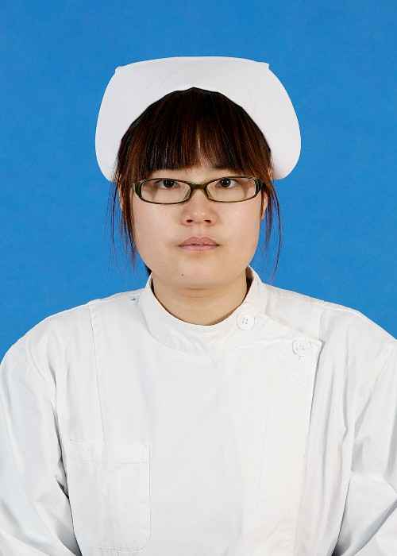陈洁洁
护师，本科学历
有呼吸内科工作经历，能熟练进行各项护理操作，擅长与病人沟通，有爱心，细心，责任心 与耐心，微笑予人，工作于心。
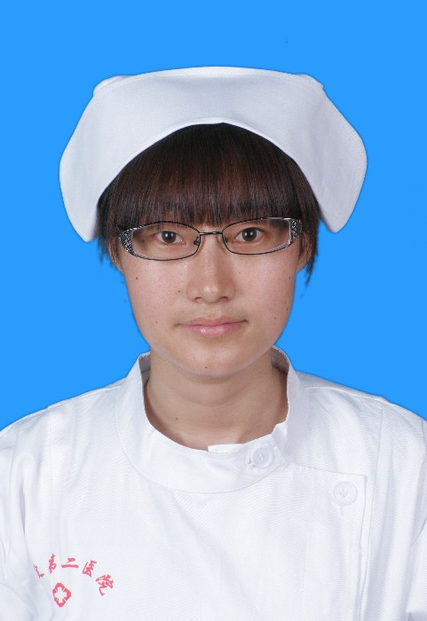俞丽英
护师，本科学历
有血管外科、神经内科、感染内科及内分泌科工作经历，曾在武汉梨园医院进修糖尿病足病 护理，微笑以待，热心护理。

张 蓉
护师，本科学历
有急诊室、内分泌科工作经历，有熟练的专业技能和丰富的实践经验。本着爱心和责任心， 立志为患者提供优质护理和人文关怀。
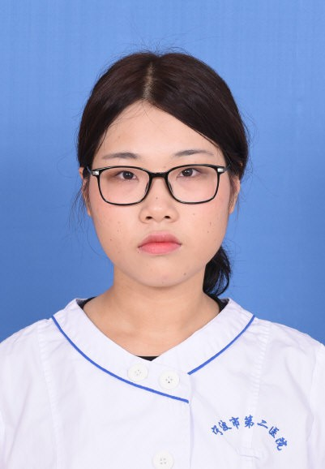章梦蝶
护士，大专学历，共青团员
从事骨科护理，曾在ICU 进修学习，微笑面对病人，工作耐心认真。在工作中不断学习，努 力成长。
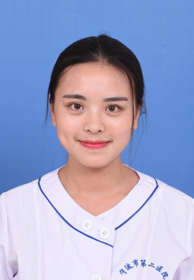侯学琳
护士，本科学历
有放化疗科，骨科工作经历。遵从南丁格尔的精神，为患者提供优质的护理服务。
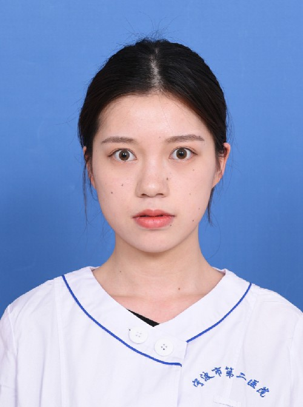李娇涵
护士 专科学历，共青团员
从事骨科护理，用真诚的态度对待每一位患者，用友善的微笑迎接每一天工作，不断学习， 热情服务。